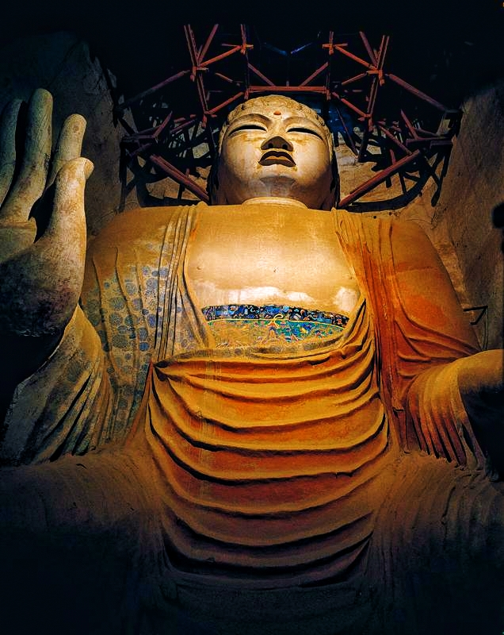
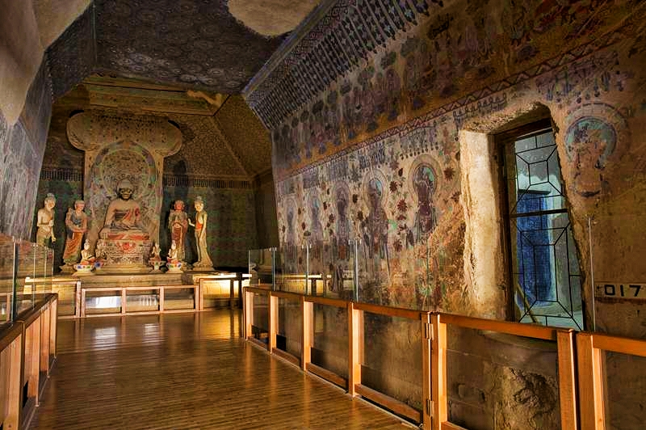
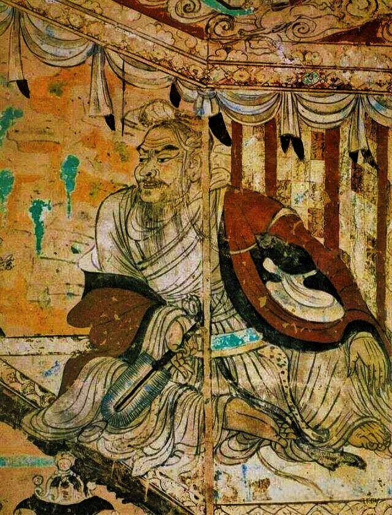
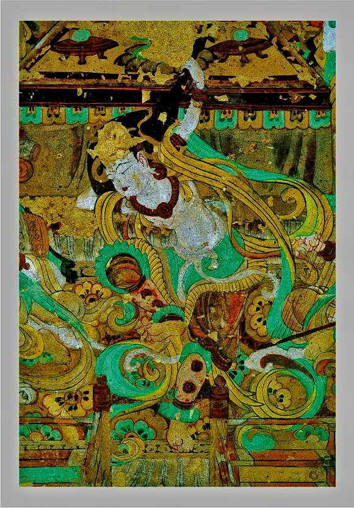
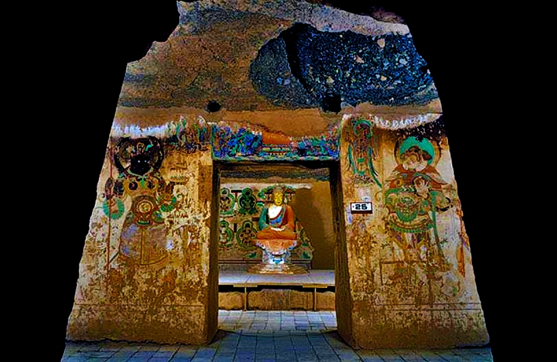

石窟精选

莫高窟第96窟
唐代 · 九层楼
莫高窟第96窟，俗称"九层楼"，是莫高窟的标志性建筑，内有高达35.5米的弥勒佛像，是世界上最大的室内坐佛。

莫高窟第257窟
北魏 · 九色鹿本生
莫高窟第257窟以"九色鹿本生"故事画闻名，壁画色彩鲜艳，构图巧妙，是北魏时期的经典代表作。

莫高窟第17窟
晚唐 · 藏经洞
莫高窟第17窟，即著名的"藏经洞"，1900年发现了大量珍贵的古代文献和艺术品，对研究敦煌学具有重要意义。

莫高窟第103窟
唐代 · 维摩诘经变
莫高窟第103窟的"维摩诘经变"壁画以其精湛的线描技法和生动的人物形象著称，是唐代壁画的杰作。

莫高窟第112窟
唐代 · 反弹琵琶
莫高窟第112窟的"反弹琵琶"壁画是敦煌艺术的标志性形象，展现了唐代乐舞的高超技艺。

榆林窟第25窟
中唐 · 西方净土变
榆林窟第25窟的"西方净土变"壁画色彩绚丽，构图宏伟，是中唐时期壁画艺术的杰出代表。